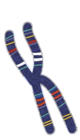

Allele Information for WGS Data (No GC Correction)
Source:R/wgs_series.R
allele.info.WGS3.RdDetects per-SNP duplication (and optionally deletion) signals in WGS data using a joint genotype + sequencing-depth likelihood-ratio framework. Depth is modelled per sample with a negative-binomial distribution; no per-bin GC correction is applied. Use this variant when GC bias is negligible (e.g. PCR-free libraries on small target regions) or when a reference FASTA is not available.
Usage
allele.info.WGS3(
vcf = NULL,
fis = NULL,
parallel = FALSE,
numCores = NULL,
nb_para = NULL,
sig = 0.95,
deletion = FALSE,
perm_test = TRUE,
chroms = NULL,
bed = NULL,
...
)Arguments
- vcf
VCF input. Either (a) a file path (character) that will be read via
readVCF(), (b) a list returned byreadVCF()with a$vcfelement, or (c) adata.framewhose first column holds chromosome names.- fis
Numeric scalar, global inbreeding coefficient. If
NULL(default), it is estimated internally withh.zygosity().- parallel
Logical. If
TRUE, parallelise the per-sample and permutation loops with aparallelcluster.- numCores
Number of cores to use when
parallel = TRUE. Defaults toparallel::detectCores() - 1.- nb_para
Optional pre-computed negative-binomial parameter table (one row per sample, with columns
mean,size,mean2,size2). IfNULL, the table is fit internally.- sig
Numeric in
(0, 1), quantile threshold for the permutation-based significance cut-off (default0.95).- deletion
Logical. If
TRUE, also test for deletions (N = 1 vs. N = 2) in addition to duplications (N = 4 vs. N = 2).- perm_test
Logical. If
TRUE(default), estimate per-Nhet significance thresholds by permutation; ifFALSE, the function returns raw likelihood ratios only (no*.sigor*.statcolumns).- chroms
Optional character vector of chromosome names to process (e.g.
c("chr1", "chr2")). Mutually exclusive withbed.- bed
Optional path to a BED file. Only SNPs overlapping at least one BED interval are processed. Mutually exclusive with
chroms.- ...
Currently unused; reserved for future arguments.
Value
A single data.frame containing one row per processed SNP
(merged across all chromosomes / regions). Columns include:
First 4 columns: Inherited from the input VCF (typically
CHROM,POS,REF,ALTor similar metadata).mdep, Nhet, Nmiss, p_alt, delta: Mean depth across samples, heterozygous-genotype count, missing-genotype count, alt-allele frequency, and the deviation from expected Nhet given \(F_{is}\).lhr.dup, dup.sig, dup.stat: Duplication likelihood ratio, permutation threshold for the SNP's Nhet, and classification ("duplicated"/"non-duplicated").lhr.del, del.sig, del.stat: (only whendeletion = TRUE) deletion analogues of the above.
When perm_test = FALSE, the *.sig and *.stat columns are omitted
and only the raw lhr.* columns are returned.
Pipeline overview
Optional region filter (
chromsorbed).Global inbreeding coefficient (\(F_{is}\)), per-sample negative-binomial depth parameters, and beta-binomial allelic-ratio parameters are fit on the full filtered set.
Per-chromosome loop: depth-based likelihoods are computed with
stats::dnbinom()using the global per-sample NB parameters; genotype likelihoods are computed under beta-binomial (or binomial when \(\rho < 10^{-4}\)).Likelihood ratios for duplication (and deletion) are computed per SNP; if
perm_test = TRUE, significance thresholds are estimated from a permutation pool drawn across all chromosomes.All per-chromosome results are merged into one
data.frame.
Region-filter behaviour
chroms and bed cannot be supplied together. With no
filter, every SNP in the VCF is processed. With chroms, SNPs whose
CHROM is in the vector are kept (missing chromosomes generate a
warning). With bed, SNPs overlapping any interval are kept.
In all cases, the per-chromosome loop iterates over the chromosomes that
actually appear in the retained SNPs, and outputs are merged before
return.
When to use GC correction instead
The negative-binomial depth model used here treats all SNPs from one
sample as draws from a single distribution, so any systematic GC-driven
over- or under-coverage will inflate the false-positive rate at the
extremes of the GC spectrum. If your sequencing protocol shows visible
GC bias (e.g. PCR-amplified libraries, hybrid-capture targets), use
allele.info.WGS.GCcor instead.
Memory
The dominant memory term is the per-chromosome likelihood matrix
(nSNP_chr rows by 4 * nsample or 6 * nsample
columns). It is allocated and freed inside each iteration of the
chromosome loop, so peak memory scales with the largest chromosome, not
the full genome.
See also
allele.info.WGS.GCcor (GC-bias-corrected variant),
parse_region_filter (internal region filter helper).
Examples
if (FALSE) { # \dontrun{
# Whole genome
res <- allele.info.WGS3(vcf = "sample.vcf.gz")
# Subset of chromosomes, with deletion testing, in parallel
res <- allele.info.WGS3(
vcf = "sample.vcf.gz",
chroms = c("chr1", "chr2"),
deletion = TRUE,
parallel = TRUE,
numCores = 8
)
# Restrict to a BED file, raw LHR only (no permutation thresholds)
res <- allele.info.WGS3(
vcf = "sample.vcf.gz",
bed = "candidate_regions.bed",
perm_test = FALSE
)
} # }